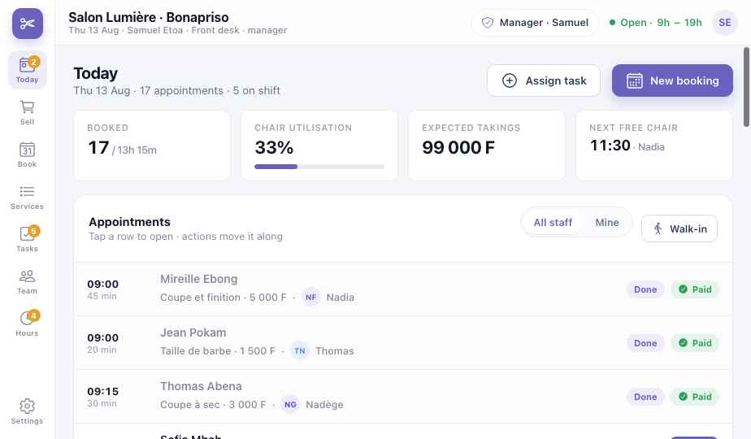
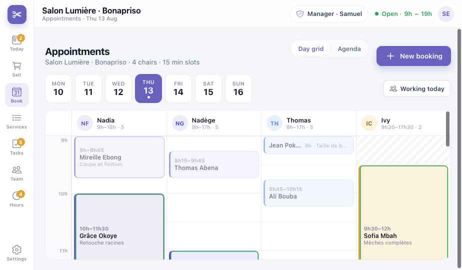
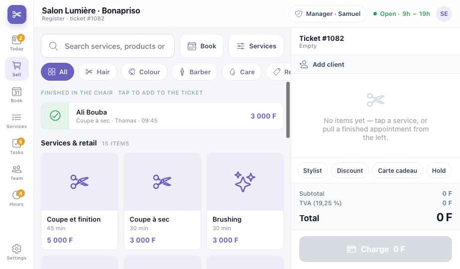

Guide de module
Salon
L'agenda, l'encaissement au fauteuil, les heures de l'équipe et la liste d'ouverture — pour salons de coiffure, barbiers, instituts de beauté et ongleries. Les chapitres communs sont dans les chapitres Plateforme.
Les captures montrent la version anglaise du prototype. Les boutons sont donnés en français, avec le libellé anglais entre parenthèses quand c'est utile.
Salon · Partie 1
Est-ce pour moi ?
Salon de coiffure
Coupes, couleurs, tresses et soins ; plusieurs coiffeuses, rendez-vous et clients de passage.
Barbier
Prestations courtes, surtout sans rendez-vous, une file sur l'écran.
Beauté · ongles · spa
Rendez-vous plus longs, produits vendus après la prestation.
Ce que vous avez à chaque niveau
LiteRéserver et encaisser
- Agenda : aujourd'hui et la semaine
- Encaisser prestations et produits
- Prestations avec durée et prix
MidFaire tourner l'équipe
- Envoyer une prestation à la coiffeuse
- Équipe : qui travaille quand
- Tâches d'ouverture et de fermeture
FullPayer chacun justement
- Pointage : arrivée et départ
- Commission par coiffeuse
- Produits techniques consommés par prestation
- Borne d'accueil · écran de file
Caser un client de passage
Jeudi au Salon Lumière, Bonapriso. Une cliente entre pour une coupe rapide. Regardez Koomzo trouver le créneau, l'afficher à l'écran et clôturer la note.
Retouche racines
Mèches complètes
- 10:15 — trois fauteuils sont occupés et l'agenda semble plein jusqu'à midi.
- Une cliente entre pour une coupe à sec. Samuel appuie sur Passage (Walk-in) et choisit la prestation.
- Koomzo trouve 30 minutes libres avec Thomas à 10:30 — entre deux rendez-vous.
- Le passage se place dans la colonne de Thomas. Aucun autre rendez-vous ne bouge.
- L'écran affiche son numéro. Elle s'assoit ; personne ne crie dans le salon.
- Thomas a fini. La prestation apparaît dans Terminé au fauteuil, prête pour la note.
- Payé par MoMo, et le prochain rendez-vous pris avant qu'elle parte.
Salon · Partie 2
Installation Lite
- Premiers pasCompte, établissement et personnel — P1. Chaque coiffeuse a un PIN et ses jours de travail.
- Horaires et fauteuils9:00 à 19:00, 4 fauteuils, créneaux de 15 minutes.
- Ajoutez les prestationsNom, durée, prix, qui peut la faire — Coupe et finition 45 min 5 000 F ; Retouche racines 90 min 12 000 F.
- Ajoutez les produitsShampooings, huiles, brosses — vendus au fauteuil. Le stock est dans le module Stock.
- PaiementsEspèces, MTN MoMo, Orange Money ; cartes cadeau si vous en vendez.
- Une cliente testRéservez, commencez, terminez, encaissez. Puis supprimez le test.
Salon · Partie 3
Une journée au salon
| Moment | Ce que vous faites | Écran | Niveau |
|---|---|---|---|
| Ouverture | Cochez la liste d'ouverture ; pointez. | Tâches · Heures | Mid |
| Coup d'œil du matin | Qui est réservé, qui est libre ensuite, recette prévue. | Aujourd'hui | Lite |
| Un rendez-vous par téléphone | Nouveau rendez-vous : cliente, prestation, coiffeuse, heure. | Agenda | Lite |
| Un client de passage | Passage → Koomzo trouve le premier fauteuil qui convient. | Aujourd'hui | Lite |
| Prestation terminée | Elle passe dans Terminé au fauteuil ; ajoutez les produits, encaissez. | Encaisser | Lite |
| Avant qu'elle parte | Prenez le prochain rendez-vous. | Agenda | Lite |
| Fermeture | Tâches de fermeture, pointage ; commissions et heures de la semaine. | Tâches · Équipe | Full |
Salon · Partie 4
Les écrans
La barre de gauche : Aujourd'hui (Today), Encaisser (Sell), Agenda (Book), Prestations, Tâches, Équipe, Heures, et Réglages en bas. Une coiffeuse connectée voit d'abord sa propre journée.
Aujourd'hui Lite

1234567- Rendez-vous · occupation · recette prévue du jour.
- Prochain fauteuil libre — la réponse à « vous pouvez me prendre ? ».
- Toute l'équipe ou Moi.
- Passage (Walk-in) — case un client dans le premier créneau.
- État — réservé, au fauteuil, terminé, payé.
- Assigner une tâche — à quelqu'un de service. Mid
- Nouveau rendez-vous.
Agenda Lite

123456- Grille ou Liste.
- La semaine — touchez un jour.
- Une colonne par coiffeuse, avec ses horaires.
- Rendez-vous — glissez pour déplacer, tirez le bord pour allonger.
- Présentes aujourd'hui — masquer celles qui sont en repos.
- Hachuré — la coiffeuse n'a pas encore commencé.
Encaisser Lite

1234567- Recherche de prestations, produits ou clientes.
- Catégories — Coiffure, Couleur, Barbier, Soins, Revente.
- Terminé au fauteuil — touchez pour mettre la prestation sur le ticket.
- Prestations et produits.
- Ajouter une cliente — historique et prochain rendez-vous.
- Coiffeuse · Remise · Carte cadeau · En attente.
- Encaisser (Charge) — espèces, MoMo, Orange Money ou partagé. TVA affichée.
Salon · Partie 5
En cas de problème
Commencez celle qui attend si un fauteuil est libre ; glissez le rendez-vous en retard plus tard. Koomzo signale un chevauchement.
Agenda → sa colonne → déplacez chaque rendez-vous vers quelqu'un qui fait la prestation. La cliente peut être prévenue par WhatsApp.
Tirez la fin du rendez-vous. Le suivant affiche le conflit ; déplacez-le ou confiez-le à une autre coiffeuse.
Le ticket montre la prestation et son prix affiché. Une remise demande un motif ; au-delà de la limite, le gérant.
Il se vend quand même ; le stock passe sous zéro jusqu'à la réception. Fixez un seuil dans le Stock.
Salon · Partie 6
Aller plus loin
Commission Full
Une part de chaque prestation et produit par coiffeuse, calculée chaque semaine.
Pointage Full
Arrivée et départ avec un PIN ; heures comparées au planning.
Borne d'accueil Full
Les clientes s'enregistrent sur une tablette à l'entrée.
Écran de file Full
Qui passe ensuite, sur une télé. Utilise le module File d'attente.
Tâches Mid
Listes d'ouverture et de fermeture, avec qui a coché quoi.
À imprimer et afficher
Fiches du personnel
2. Téléphone : Nouveau rendez-vous.
3. Passage : Passage → prestation.
4. Terminé : Encaisser → Terminé au fauteuil → Encaisser.
5. Prochain rendez-vous avant le départ.
2. Moi → votre journée.
3. Cliente au fauteuil : Commencer.
4. Fini : Terminé.
5. Pointez en partant.
2. Cochez au fur et à mesure.
3. Quelque chose de cassé ? Une note.
4. Fermeture : attendez « Synchronisé ».
Guide utilisateur Koomzo · Salon · Version 2 · Les écrans montrés sont ceux du prototype Koomzo actuel. Les noms, prestations et prix sont des exemples.